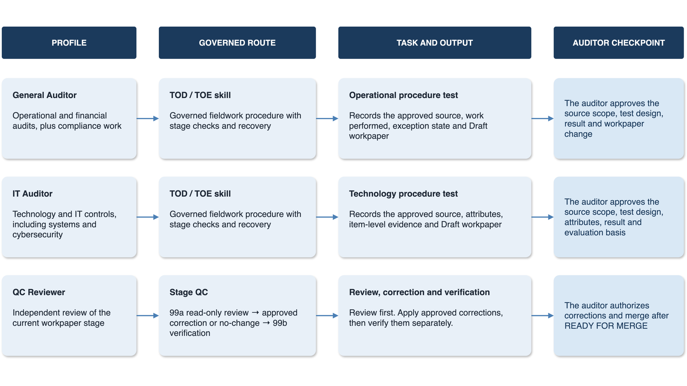

Run the work
Turn approved procedures into structured TOD and TOE workpapers, meeting plans, evidence requests and progress updates.
- Work-program intake
- Walkthrough preparation
- Procedure execution
AI-Augmented Engagement Operating System
The current version of AEOS supports the engagement process from the approved engagement work program onward. It gives auditors the roles, workflows, templates and evidence records needed to move from fieldwork through reporting while keeping every decision visible.
Product view
Each task names the context, role, workflow, source boundary and output before the model begins.
What it does
AEOS helps the auditor execute the approved program. It does not invent scope, criteria or procedures that are missing from the source.
Turn approved procedures into structured TOD and TOE workpapers, meeting plans, evidence requests and progress updates.
Preserve the link between source, procedure, evidence, result and conclusion throughout the engagement.
Separate drafting from reliance. Corrections, exceptions and final decisions remain with the auditor.
Capabilities
Operating process
Register the work program, criteria, source set and file boundaries.
context/engagement.mdSelect the auditor role, approved model and workflow for the task.
role + model + skillCreate the workpaper structure, meeting plan, evidence request or test record.
draft → reviewUse only authorized evidence and record the work performed, result, gaps and contradictions.
source → procedureChallenge source support, corrections, exceptions and the proposed conclusion.
QC → auditorMove reviewed work into the final workpaper, reporting and closure route.
approved changes onlySystem design
AEOS runs in the auditor's normal desktop tools. Its operating logic remains visible in Markdown files, role profiles, workflows, templates and source records.

Roles
The profile sets the audit perspective and file boundaries. The workflow then defines the task and expected output.
Operational, financial and compliance work.
Technology systems, cybersecurity and IT controls.
Independent review of the current workpaper stage.

Configurable by design
AEOS's agentic and modular design lets an audit function align the workspace to its approved lifecycle, roles, criteria, templates and terminology without forcing every engagement into one fixed format.
The lifecycle structure, agent profiles, workflow skills, prompts, templates, evidence controls and operating guides form a readable modular core.
Skills can define the required inputs, stage order, human checkpoints, stop conditions and outputs for the organization's approved engagement process.
A private overlay can supply approved criteria, playbooks, templates, terminology and restricted examples while keeping engagement material outside the reusable public core.
Configuration may change the local route, but source authority, provenance, draft state, file boundaries, human approval and independent review stay explicit.
Requirements
There is no separate AEOS backend. The product is the configured workspace, its files and the approved model route.
LLM contract
AEOS does not bind the workspace to one model. The auditor chooses an approved route for each task based on capability, data sensitivity and organizational authorization.

Common questions
AEOS